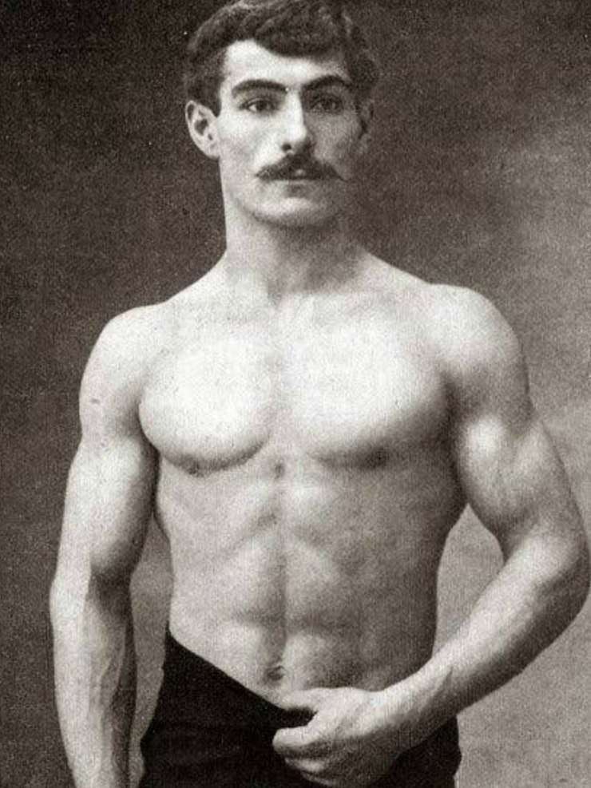

About Volo
Volothamp Geddarm is a stunning man of adventure and peril! He is an author and mage who risks life and limb for knowledge and fame! Hearthrob no doubt.
Young Volo, Cool Factz
- He had met a Beholder who couldn't lose in chess so Volo brought checkers.
- Volo won a beauty pagent three years in a row within a gully dwarf colony.
- Nearly always has a new best-seller on the market.
Volo's Friends
Throughout his many travels he has made several...contacts